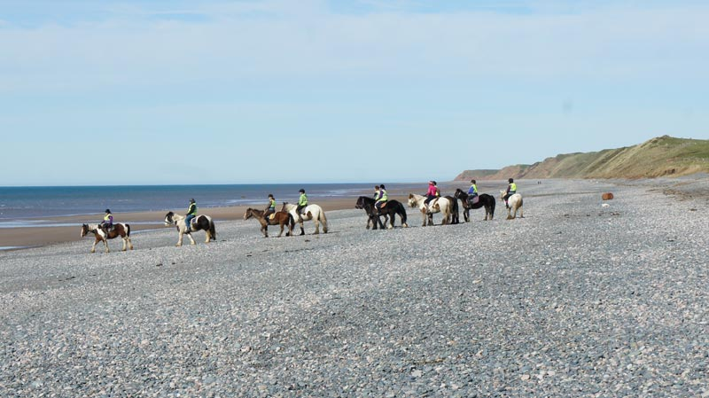
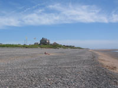
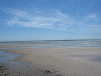

Silecroft Tourist Information
 |
Silecroft is a relaxed coastal village and beach a few miles to the north of Millom on the A 5093. The large expanse of the child friendly sand and pebble beach allows plenty of space for other activities of angling, kiting, dog walking and horse riding. A visit to the Trekking Centre is highly recommended as is a round of golf on the well maintained 9 hole course with its fine sea views. How to get there: By rail: By road: |
 |
 |
{kind=link}
{kind=link}
Attractions in Silecroft |
The Beach
When the tide is out, a gentle slope over smooth loose stones leads to a wide expanse of safe sandy beach. The advantages of easy access, ample parking and toilet facilities plus the impressive backdrop of Black Combe Fell attract many to the seashore of Silecroft. Here, there’s room for all to either just sit and relax, walk the dog, horse ride through the surf, fly a kite, canoe, water ski, beach and boat fish and more.
Fishing
Silecroft is an established fishing venue especially well known for the sea fishing from the beach. South Cumbria Sea Sports Association will provide help and advice of this, fishing clubs and boat fishing.
www.scssa.co.uk
Horse Riding
Both Murthwaite Green in Silecroft and Cumbrian Heavy Horses based in the nearby Whicham Valley provide an extensive range of equestrian activities of novice to experienced rider ability. Exhilarating beach and fell rides lasting from as little as 30 minutes to a full day, and a choice of demanding trails of around 70 miles in the Wasdale and Langdale Valleys.
www.murthwaitegreen.co.uk
www.cumbrianheavyhorses.com
Silecroft Golf Club
A nine hole course with superb view of sea and fells. Can be breezy.
World Owl Centre
This, the headquarters of the World Owl Trust is about 30 minutes drive north from Silecroft up the coast to Muncaster Castle. It houses the largest collection of owls in existence and provides free treatment to injured owls and other wildlife. A chance to “adopt” an owl and an opportunity for the children to register for the “Kids Only Zone”. The children will be allocated their own secret password to gain entry!
www.muncaster.co.uk
Walking
Silecroft stands on the Cumbria Coastal Way. There’s much from which to choose. The not too strenuous tracks to the summit of Black Combe are popular as are the routes on and around the nearby Furness Fells. Beyond, walkers converge in the Langdale and Wasdale valleys before setting out on the ascents of Scafell Pike, Great Gable, Bow Fell or Pillar. The latter of course require a good deal more effort and experience, and should not be attempted unless wearing suitable clothing and footwear. All visitors should also be aware of the sudden change of weather conditions which do occur at higher levels.
Swinside Stone Circle
The circle of 55 stones has been dated as one of the earliest sites in Britain. It can be reached either on foot from the eastern side of Black Combe; a round trip between one and two hours, or by road from Silecroft to Duddon Bridge on the A 595 before turning on to the fell road in the direction of Ulpha. The Circle is a mile or so beyond. It stands on private land but can be easily viewed from a nearby public footpath. A legend suggests that a church is buried beneath the site, whilst another tale, probably linked to the former, tells of the Devil destroying the beginnings of a church building thus giving rise to the Circles alternative name of Sunkenkirk. This is a location of lovely views, walks and cycling routes.
Food and Drink in Silecroft |
The Miners Arms
This is a traditional country pub only a few minutes walk from Silecroft Railway Station and less than a mile from Silecroft beach. A full menu features many tasty examples of local produce together with a selection of beers, wines, spirits and soft drinks. Outside seating available.
Food served from 6pm until 8.30pm on Monday to Friday and from midday until 8.30pm at the weekends. Phone 01229 772325.
King William Pub. Kirk Santon
Open for meals Tuesday – Thursday 6 pm – 8.30 pm.
Wednesday – Saturday noon – 2.30 pm.
Sunday 5.30 pm – 7.30 pm.
Brockwood Hall Bar and Dining Rooms. Wicham Valley
Phone: 01229 772329
The Byre Tea Room & Restaurant. Bootle
Closed Mondays except Bank Holidays.
Open 9am – 4.30pm. Tuesday – Sunday.
All food home made and the Sunday roast is a speciality.
Phone: 01229 718757
Transportation in Silecroft |